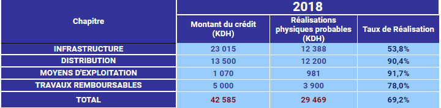

Espace Technique
Eau Potable
Réalisations 2014 – 2018
L’amélioration de la distribution, le développement et la restructuration du réseau ont exigé des investissements importants. Suite à la prise en charge de la distribution d'eau potable dans le Grand Agadir en 1982, et conformément aux solutions techniques retenues par les deux schémas directeurs de distribution d'eau potable de 1982 et 1991 et actualisé en 2005, la RAMSA a engagé un important programme d'investissement visant la réorganisation du réseau tel que décrit précédemment en vue de l'amélioration des conditions de desserte de la population et afin de rattraper le retard considérable constaté en matière d'infrastructure. Actuellement la RAMSA répond en termes d’infrastructure aux besoins du grand Agadir./br/> Les grandes lignes de ce programme se résument à :
- La restructuration de la distribution par l'adoption d'une structure étagée (création d'étages, séparation des étages, …) pour assurer des conditions de desserte optimales
- Création d’interconnexions entre les sous réseaux
- Le renforcement de la capacité de stockage et de transfert par la construction de nouveaux réservoirs
- Extension de réseau pour l'alimentation des nouvelles zones d’habitations.
- Le suivi et l'amélioration du rendement de réseau (Recherche de fuites, changement des compteurs, réhabilitation réseau,…)
- La réhabilitation des stations vétustes ;
Les objectifs fixés ont été atteints grâce à ces investissements ; En effet les indicateurs de gestion de la distribution d'eau potable dans le Grand Agadir confirment l'aboutissement de ces orientations.
Réalisations en Milliers de DH
.jpg)
Compte rendu de l'activité de l'exercice 2018
CHAPITRE I : INFRASTRUCTURE
Les réalisations en Infrastructure au titre de l'année 2018 ont concerné essentiellement :
- La continuité de la mise à niveau des équipements et outils de télégestion
- La normalisation et la réhabilitation des stations et réservoirs ;
- LL’aménagement divers des locaux existants
- Le lancement des travaux d’infrastructure et réseau de distribution de DRARGA ;
- L’achèvement des travaux de mise à niveau des stations Bouargane 130 et Tamraght30
- L’achèvement des prestations de mise à niveau du système de gestion des ressources humaines ;
- L’achèvement des travaux de mise en conformité avec la Direction Nationale de la sécurité des Systèmes d’information ;
- l’achat du terrain abritant le réservoir Anza cote 101.
Les dépenses faites au titre de ce chapitre sont estimées à 12.388.000 DHS, soit 54% des prévisions de dépenses de l’année 2018. Ce taux moyen est dû essentiellement à l’ajournement du projet de construction d’un réservoir de 25.000 m3àTassila 104 pour un paiement prévu en 2018 de 5 MDHS.
CHAPITRE II : REPARTITION - DISTRIBUTION
Ce chapitre concerne le renforcement du réseau, l’acquisition des compteurs, le renouvellement et la réhabilitation des conduites et branchements vétustes, l’installation des compteurs de contrôle et de gestion ainsi que la modulation de pression dans les différents étages de distribution et toutes les dépenses de 1er établissement nécessaires pour :
- L’acquisition de nouveaux compteurs
- Les travaux de renouvellement du réseau et branchements vétustes.
- Les travaux de renforcements et du renouvellement du réseau (pose de conduites, compteurs de gestion, réducteurs et modulateurs de pressions, vannes…)
- la mise en place de systèmes de modulation de pression à l’entrée des sous-réseaux.
- La poursuite des travaux de sectorisation du réseau.
- La recherche et réparation des fuites.
- le changement des compteurs âgés de plus de dix ans.
- l'installation de nouveaux compteurs de gestion à l'intérieur du réseau.
Les prévisions de clôture sont estimées à 12.200.000 DHS, soit 90 % des crédits prévus pour l’exercice 2018.
CHAPITRE III : MOYENS D’EXPLOITATION
Ce chapitre regroupe les acquisitions de mobiliers, machines de bureau, équipements informatiques, appareils de mesure, matériel de sécurité, matériel de communication, véhicule de direction et l’outillage nécessaires à l'exploitation. Il s’agit essentiellement de :
- Machines et mobilier de bureau
- Équipement de bureau
- Outillage et matériel de sécurité
- Matériel informatique
- Appareils de mesure
- Matériels de communication
Les prévisions de clôture sont estimées à 981.000 DHS, soit 92 % des prévisions de dépenses de l’année 2018.
CHAPITRE IV : TRAVAUX REMBOURSABLES
Ce chapitre concerne les travaux à la demande des promoteurs immobiliers et des particuliers, il regroupe tous les branchements et les extensions dont les dépenses sont couvertes par les participations des tiers à la Régie. Les prévisions de clôture au titre de ce chapitre sont estimées à 3.900.000 DHS, soit 78% des prévisions de dépenses de l’année 2018.
© RAMSA
Realisation 2019